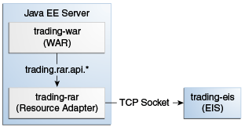
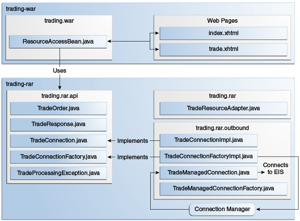

>> BUY 1000 ZZZZ MARKET
<< EXECUTED #1234567 TOTAL 50400.00 FEE 252.00 Copyright © 2017, Oracle and/or its affiliates. All rights reserved.
Copyright © 2017, Oracle and/or its affiliates. All rights reserved.
|
Java Platform, Enterprise Edition (Java EE) 8 The Java EE Tutorial E63026-01 Beta Draft (Pre-General Availability) |
| Previous | Next | Contents |
The trading example demonstrates how to implement and use a simple
outbound resource adapter that submits requests to a legacy EIS using a
TCP socket. The example demonstrates the scenario in
Figure 56-1 and consists of the following modules:
trading-eis: A Java SE program that simulates a legacy EIS
trading-rar: The outbound resource adapter implementation
trading-war: A web application that uses the resource adapter
trading-ear: An enterprise archive that contains the resource
adapter and the web application

The trading-eis module is an auxiliary project that resembles a legacy
stock trading execution platform. It contains a Java SE program that
listens for trading requests in plain text on a TCP socket. The program
replies to trading requests with a status value, a confirmation number,
and the dollar amounts for the requested shares and fees. For example, a
request-response pair would look like this:
>> BUY 1000 ZZZZ MARKET
<< EXECUTED #1234567 TOTAL 50400.00 FEE 252.00The trading-rar module implements the outbound contract of the Java EE
Connector Architecture to submit requests and obtain responses from the
legacy stock trading execution platform. The trading-rar module
provides and implements a custom client interface for Java EE
applications to use. This interface is simpler than the Common Client
Interface (CCI).
The trading-war module is a web application with a JavaServer Faces
interface and a managed bean. This application enables clients to submit
trades to the EIS using the resource adapter provided by the
trading-rar module. The trading-war module uses the custom client
interface provided by the resource adapter to obtain connections to the
EIS.
In most cases, Java EE application developers use outbound resource adapters developed by a third party. Outbound resource adapters either implement the Common Client Interface (CCI) or provide a custom interface for applications to interact with the EIS. Outbound resource adapters provide Java EE applications with the following elements:
Connection factories
Connection handles
Other interfaces and objects specific to the EIS domain
Java EE applications obtain an instance of the connection factory via resource injection and then use the factory object to obtain connection handles to the EIS. The connection handles enable the application to make requests and obtain information from the EIS.
The trading-rar module provides a custom client interface that
consists of the classes listed in Table 56-1.
Table 56-1 Classes and Interfaces in the javaeetutorial.trading.rar.api Package
API Component |
Description |
|
Represents a trade order for the EIS |
|
Represents a response from the EIS to a trade request |
|
Represents a connection handle to the EIS Provides a method for applications to submit trades to the EIS |
|
Enables applications to obtain connection handles to the EIS |
|
Indicates that a problem occurred processing a trade request |
The ResourceAccessBean managed bean in the trading-war module
configures a connection factory for the trading-rar resource adapter
by using the @ConnectionFactoryDefinition annotation as follows:
@Named
@SessionScoped
@ConnectionFactoryDefinition(
name = "java:comp/env/eis/TradeConnectionFactory",
interfaceName = "javaeetutorial.trading.rar.api.TradeConnectionFactory",
resourceAdapter = "#trading-rar",
minPoolSize = 5,
transactionSupport =
TransactionSupport.TransactionSupportLevel.NoTransaction
)
public class ResourceAccessBean implements Serializable { ... }The name parameter specifies the JNDI name for the connection factory.
This example registers the connection factory in the java:comp scope.
You can use the ConnectionFactoryDefinition annotation to specify a
different scope, such as java:global, java:app, or java:module.
The AdministeredObjectDefinition annotation also enables you to
register administered connector objects in the JNDI namespace.
The interfaceName parameter specifies the interface implemented by the
connection factory included in the resource adapter. In this example,
this is a custom interface.
The resourceAdapter parameter specifies the name of the resource
adapter that contains the connection factory implementation. The #
prefix in #trading-rar indicates that trading-rar is an embedded
resource adapter that is bundled in the same EAR as this web
application.
Note: You can also configure a connection factory for a previously deployed outbound resource adapter using the administration commands from your application server. However, this is a vendor-specific procedure. |
The managed bean obtains a connection factory object using resource injection as follows:
...
public class ResourceAccessBean implements Serializable {
@Resource(lookup = "java:comp/env/eis/TradeConnectionFactory")
private TradeConnectionFactory connectionFactory;
...
}The managed bean uses the connection factory to obtain connection handles as follows:
TradeConnection connection = connectionFactory.getConnection();The resource adapter returns a connection handle associated with a physical connection to the EIS. Once a connection handle is available, the managed bean submits a trade and obtains the response as follows:
TradeOrder order = new TradeOrder();
order.setNShares(1000);
order.setTicker(TradeOrder.Ticker.YYYY);
order.setOrderType(TradeOrder.OrderType.BUY);
order.setOrderClass(TradeOrder.OrderClass.MARKET);
...
try {
TradeResponse response = connection.submitOrder(order);
...
} catch (TradeProcessingException ex) { ... }The trading-rar module implements the outbound contract and a custom
client interface for the simple legacy stock trading platform EIS used
in this example. The architecture of the outbound resource adapter is
shown in Figure 56-2.

The trading-rar module implements the interfaces listed in
Table 56-2.
Table 56-2 Interfaces Implemented in the trading-rar Module
Package |
Interface |
Description |
|
|
Defines the lifecycle methods of the resource adapter |
|
|
Defines a connection factory that the connection manager from the application server uses to obtain physical connections to the EIS |
|
|
Defines a physical connection to the EIS that can be managed by the connection manager |
|
|
Defines a connection factory that applications use to obtain connection handles |
|
|
Defines a connection handle that applications use to interact with the EIS |
When the trading-ear archive is deployed and a connection pool
resource is configured as described in Using the Outbound
Resource Adapter, the application server creates
TradeConnectionFactory objects that applications can obtain using
resource injection. The TradeConnectionFactory implementation
delegates creating connections to the connection manager provided by the
application server.
The connection manager uses the ManagedConnectionFactory
implementation to obtain physical connections to the EIS and maintains a
pool of active physical connections. When an application requests a
connection handle, the connection manager associates a connection from
the pool with a new connection handle that the application can use.
Connection pooling improves application performance and simplifies
resource adapter development.
For more details, see the code and the comments in the trading-rar
module.
You can use either NetBeans IDE or Maven to build, package, deploy, and
run the trading example.
The following topics are addressed here:
Make sure that GlassFish Server has been started (see Starting and Stopping GlassFish Server).
From the File menu, choose Open Project.
In the Open Project dialog box, navigate to:
tut-install/examples/connectorsSelect the trading folder.
Click Open Project.
In the Projects tab, expand the trading node.
Right-click the trading-eis module and select Open Project.
Right-click the trading-eis project and select Run.
The messages from the EIS appear in the Output tab:
Trade execution server listening on port 4004.Right-click the trading-ear project and select Build.
This command packages the resource adapter and the web application in an EAR file and deploys it to GlassFish Server.
Open the following URL in a web browser:
http://localhost:8080/trading/The web interface enables you to connect to the EIS and submit trades. The server log shows the requests from the web application and the call sequence that provides connection handles from the resource adapter.
Before undeploying the trading-ear application, close the
trading-eis application from the status bar.
Make sure that GlassFish Server has been started (see Starting and Stopping GlassFish Server).
In a terminal window, go to:
tut-install/examples/connectors/trading/Enter the following command:
mvn installThis command builds and packages the resource adapter and the web application into an EAR archive and deploys it to GlassFish Server.
In the same terminal window, go to the trading-eis directory:
cd trading-eisEnter the following command to run the trade execution platform:
mvn exec:javaThe messages from the EIS appear in the terminal window:
Trade execution server listening on port 4004.Open the following URL in a web browser:
http://localhost:8080/trading/The web interface enables you to connect to the EIS and submit trades. The server log shows the requests from the web application and the call sequence that provides connection handles from the resource adapter.
Before undeploying the trading-ear application, press Ctrl+C on
the terminal window to close the trading-eis application.
| Previous | Next | Contents |
Copyright © 2017, Oracle and/or its affiliates. All rights reserved.
Beta Draft (Pre-General Availability)